Ensuring your code works when AI testing isn’t enough
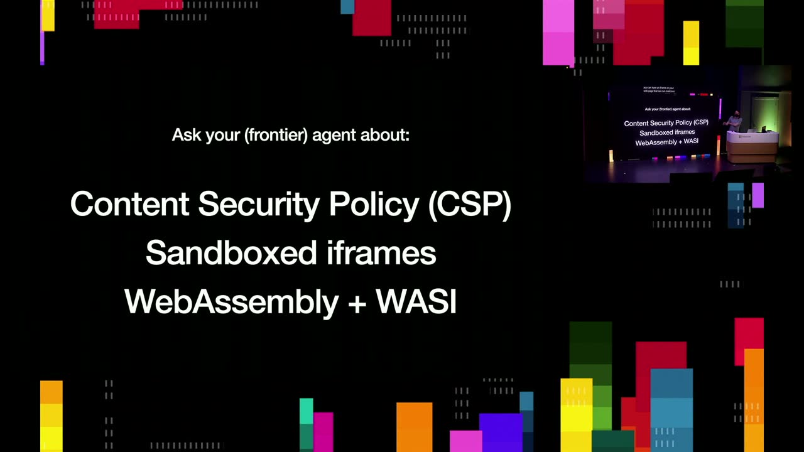
Official description
Technical talk about building AI systems that scale for humans and machines, ensuring reliable code, and scalable systems. Seating for this session is first-come, first-served. Add it to your schedule to plan your day and arrive early to secure a spot.
Summary
Overview
Simon Willison argues that AI coding agents crossed a reliability threshold in late 2025, shifting the developer's job from typing code to verifying it at vastly higher velocity. The talk surveys practical verification patterns—borrowed from large-scale engineering and adapted to run on a single laptop—for shipping trustworthy software when manual review and AI testing alone are insufficient.
Topics covered
- The "November inflection point" when coding agents (Opus 4.5, GPT-5.1 harnesses [inferred]) became reliable daily drivers, attributed to a year of reinforcement learning on coding tasks.
- "Vibe coding" versus "agentic engineering"—distinguishing throwaway experimentation from professional software shipped to production.
- The collapse of the typing bottleneck and the disappearance of incremental manual QA that used to happen while building features.
- StrongDM's "software/dark factory": rules that code must not be written or reviewed by humans, scenario testing with agent swarms, and a "digital twin universe" cloning Slack, Okta, and Jira as Go binaries to avoid rate limits and simulate bugs.
- Token spending as a cost concern (StrongDM's $1,000/engineer rule versus Uber's reported $1,500/engineer/month cap).
- Active refactoring as a review technique—nitpicking an agent's design without the social cost of critiquing a human.
- Considering stakes and "seams" when reviewing; deep review for authentication flows, light review for low-risk UI.
- Verifying API designs by having agents write throwaway code against them; hoarding interactive prototypes as verified inputs for later production work.
- Agentic documentation: running
diff against mainto keep docs current, with a strict no-opinions, no-rationales rule. - Continuous deployment and preview environments as low-effort verification, now buildable via prompted GitHub Actions workflows.
- Reducing the "blast radius" of mistakes via Content Security Policy headers, sandboxed iframes, and WebAssembly/WASI server-side sandboxes—stress-tested by asking agents to break out.
- Zero tolerance for flaky tests (including UI tests), using agents and Docker to reproduce environment-specific failures; Playwright and the Chrome DevTools Protocol for browser automation.
- Tools that help humans also help agents: CLAUDE.md onboarding docs, linters, fast-compiling languages with good error messages (Go), and learning new languages/platforms (Rust, Swift UI) through agents.
- Conceptual integrity from "The Mythical Man-Month" applied to 2026 agentic engineering; personal discipline against overly ambitious projects.
- Spec-driven development and planning mode; valuing agent transcripts as durable artifacts archived alongside commit messages.
Notable quotes
"The big question I've been thinking about recently is what should we call vibe coding when it's applied by professional software engineers to ship real software?"
"If we're going to use these tools to build worse software faster, we're missing a trick. We should be using this stuff to build better software faster."
"You can't be rude to an agent. If you're rude to your agent and it gets upset, you can reboot it and it forgets everything."
Products and tools mentioned
- GitHub / GitHub Actions / GitHub Gist
- Claude / Claude Code / CLAUDE.md
- Codex / Codex desktop
- GPT-3, GPT-5.1, GPT-5.5
- Opus 4.5
- StrongDM
- Slack, Okta, Jira
- Go, Rust, Python, Swift UI, JavaScript
- WebAssembly / WASI
- Content Security Policy, sandboxed iframes
- Docker
- Playwright, Selenium, Chrome DevTools Protocol
- Fly.io, Cloud Run, Vercel
- Redis
- Superpowers (skills for Claude Code/Codex)
- Mozilla Firefox
Speakers featured
- Simon Willison — speaker; independent developer and writer using LLMs for coding since 2022; previously an engineer at Eventbrite.
- Jesse Vincent — audience member, creator of the "superpowers" skills set (referenced by the speaker).
Follow-up resources
- simonwillison.net — the speaker's blog (also reachable via Mastodon, Bluesky, and Twitter).
Frames
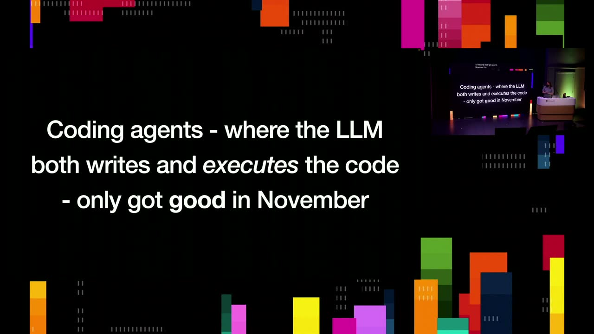
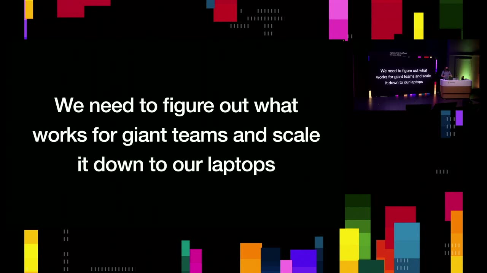
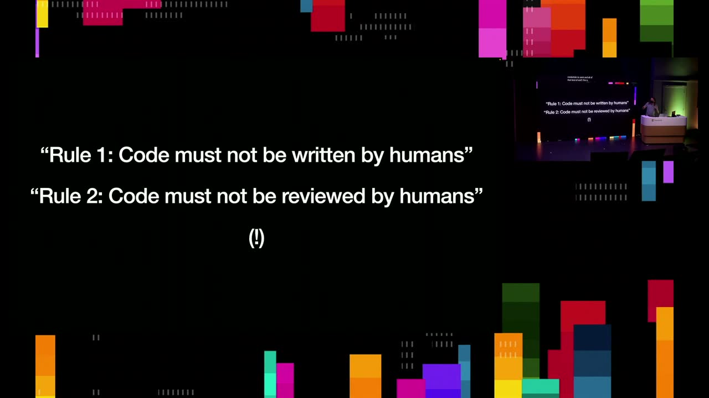
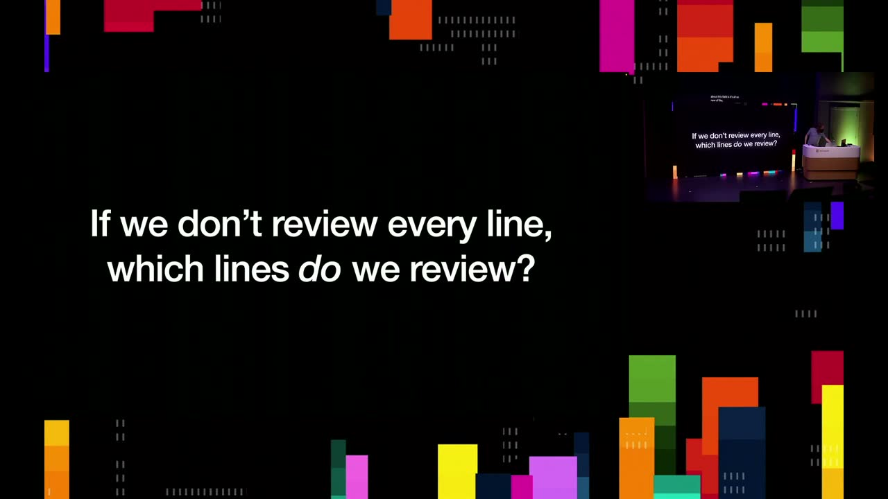
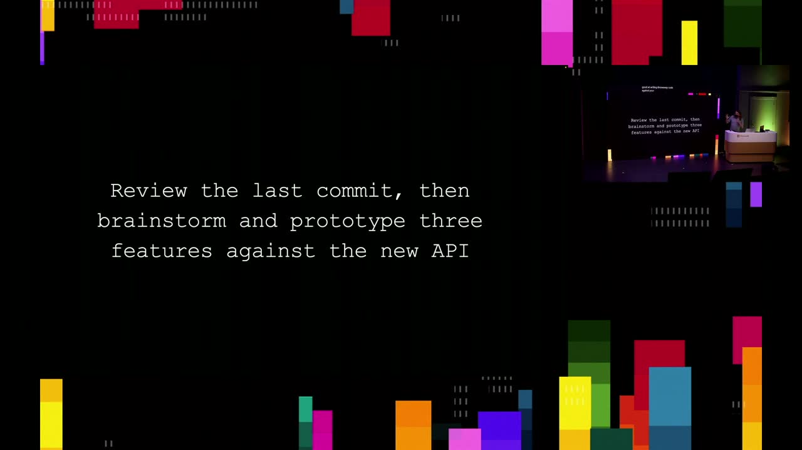
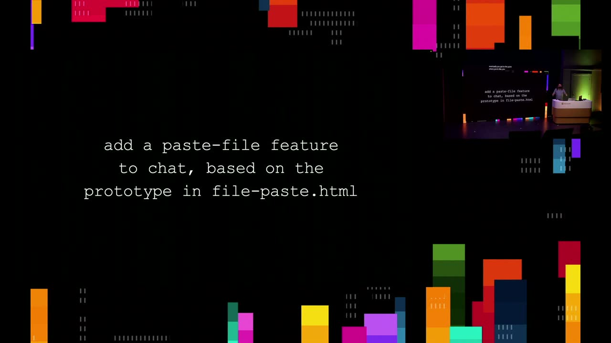
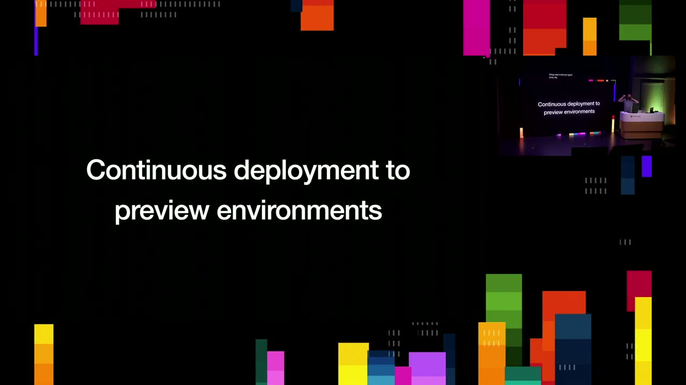
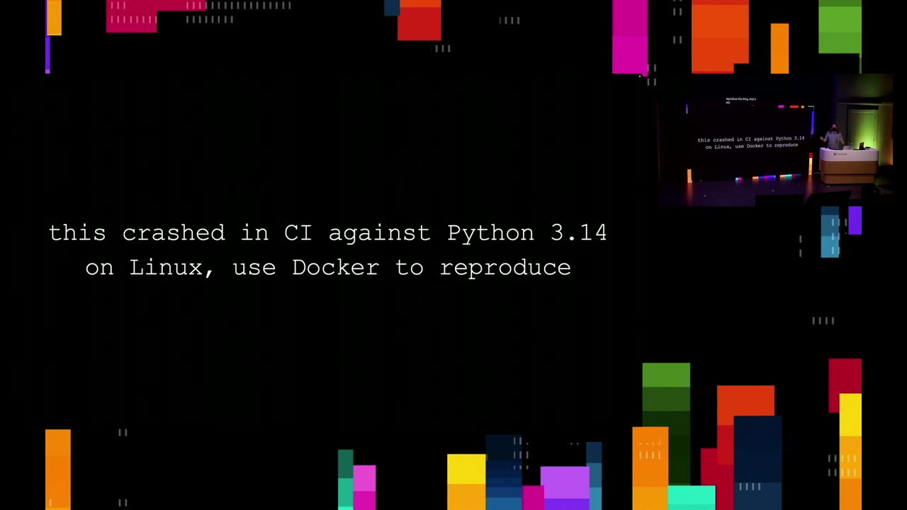
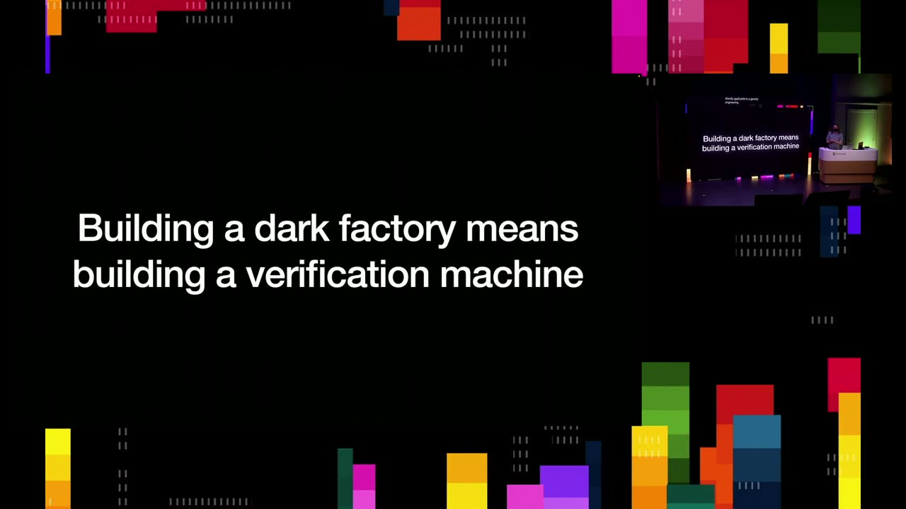
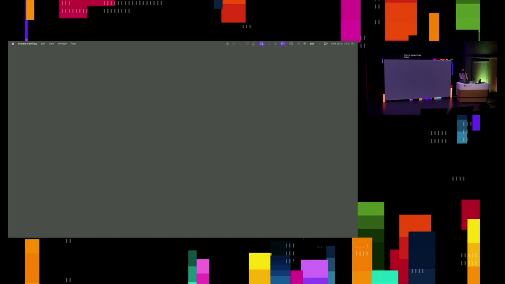
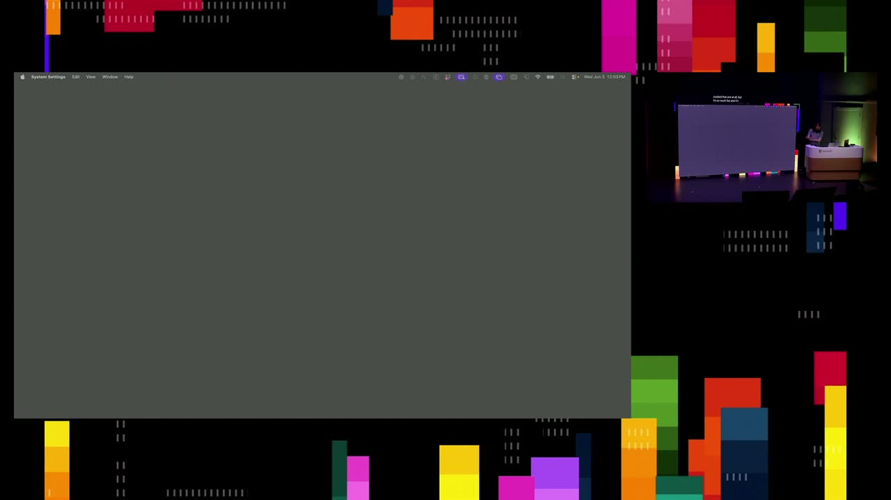
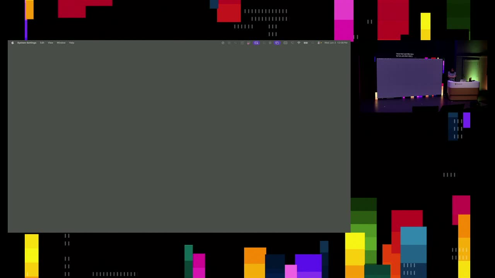
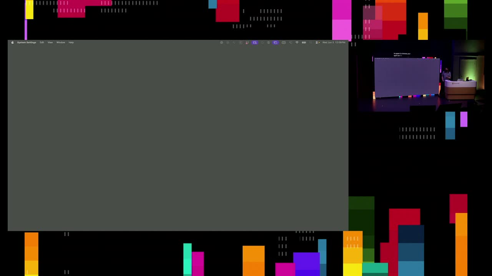
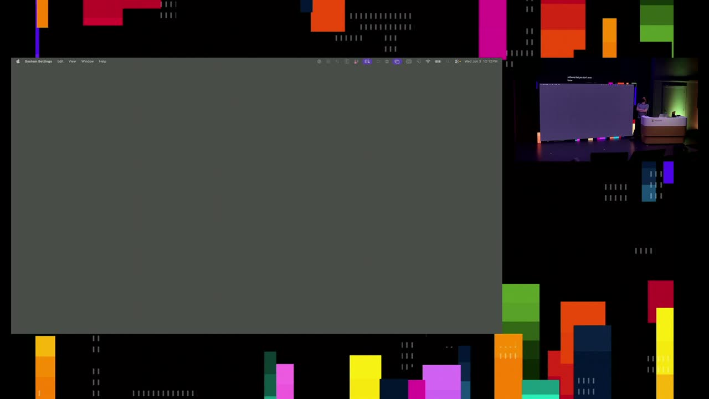
Frames around each announcement
12:29:05


{kind=link}
{kind=link}
{kind=link}
{kind=link}
{kind=link}
{kind=link}
{kind=link}
{kind=link}
{kind=link}
{kind=link}
{kind=link}
{kind=link}
{kind=link}
{kind=link}
{kind=link}
{kind=link}
Transcript
Show / hide transcript (65,332 chars)
[00:00:00] Well, good morning everyone. [00:00:02] My name is Simon Willison. [00:00:03] This is a slightly retitled talk. [00:00:05] I think the new title. [00:00:06] It's the same talk but a better title. [00:00:08] I'm going to be talking about verification patterns for agentic [00:00:12] engineering and my clicker just stopped working. [00:00:15] Go on, go on work. [00:00:16] Oh, that's frustrating. [00:00:18] Sorry about that. [00:00:20] I'll do this instead. [00:00:24] So so I have been using LMS to help me [00:00:27] write code since 2022, which in this world makes me [00:00:32] a grand elder of the space. [00:00:34] Which is completely absurd. [00:00:35] It's been 4 years but it's such a new space. [00:00:38] This is me talking about GPT 3 and how you [00:00:40] could get it to write you little SQL queries and [00:00:43] explain how code works back in when was this? [00:00:45] June of 2022? [00:00:47] And I've been exploring them on a constant basis ever [00:00:49] since. [00:00:51] And there we go. [00:00:55] And in further grand elders of the space, this is [00:00:59] Andre Carpathy in February of last year. [00:01:01] So again, positively like years ago in ancient times when [00:01:05] he introduced the term vibe coding. [00:01:07] And he said this is when you fully give in [00:01:09] to the vibes, embrace exponentials and forget that the code [00:01:13] even exists. [00:01:15] Most people did not scroll to the bottom of that [00:01:17] tweet where he said that this is for fun, it's [00:01:20] for weekend projects. [00:01:21] You wouldn't want to write code. [00:01:22] Seriously, a bunch of people took vibe coding and started [00:01:25] applying it to every element of using AI to help [00:01:28] write code. [00:01:29] I think that's a waste of a term. [00:01:30] I think that vibe coding is the sort of irresponsible [00:01:33] way of building things is much more useful. [00:01:36] But the big question I've been thinking about recently is [00:01:39] what should we call vibe coding when we're if it's [00:01:42] applied by professional software engineers to ship real software? [00:01:45] Like we're not just giving into the vibes, we're actually [00:01:47] building software that we care about, that we want people [00:01:49] to be able to use. [00:01:51] What's the term that makes sense for that? [00:01:53] The term that's bubbling to the top at the moment [00:01:55] for that is agentic engineering. [00:01:56] I think it's good enough. [00:01:57] One of the Chinese AI labs was using this in [00:02:00] one of their press releases, which was the sign to [00:02:03] me that OK, it's spread far enough that it's OK [00:02:05] to start using and justice to check. [00:02:07] Of the people in this room, how many people here [00:02:09] have shipped code to production without reading that code? [00:02:13] There's quite a few people when I pitched this talk [00:02:16] three months ago, I think that would have been nobody [00:02:18] at all. [00:02:19] Like the speed, the rate at which this has taken [00:02:21] over is kind of shocking. [00:02:23] So on the one hand, this is a very new [00:02:26] problem, right? [00:02:27] Coding agents. [00:02:29] By coding agents, I mean the class of software with [00:02:31] the LLM both writes the code and then executes that [00:02:34] code and can test it and iterate on it and [00:02:36] improve it. [00:02:37] They only really got good in November. [00:02:39] Like November 2025 is when Opus 4.5 came out. [00:02:43] GPT 5.1, the coding harnesses got really good and suddenly [00:02:47] these things went from a sort of interesting curiosity to [00:02:50] something you could use as a daily driver, Something that [00:02:53] was a reliable partner in getting work done. [00:02:56] I've been calling this the November inflection point for these [00:02:59] tools. [00:03:00] The reason they got so good in November is both [00:03:03] Open AI and Anthropic spent all of 2025 working on [00:03:06] code. [00:03:07] They were doing reinforcement learning against coding tasks. [00:03:10] It turns out that's a really strong pattern when you've [00:03:13] got something with an obvious right or wrong answer. [00:03:15] And all of those advances in that year came to [00:03:17] came to a head in November, just in time for [00:03:20] the Christmas holidays, when everyone went home and started tinkering [00:03:23] with these things and trying to figure out what they [00:03:26] could do. [00:03:27] But on the one hand, they only just got good. [00:03:31] There's something you should never do is talk about code [00:03:33] productivity in terms of lines of code written. [00:03:36] So that's exactly what I am going to do right [00:03:38] now. [00:03:39] 2004 Code completes like very, very classic software engineering textbook [00:03:44] by Steve McConnell. [00:03:45] He said back then that the industry average productivity for [00:03:49] a software product is about 10 to 50 lines of [00:03:52] delivered code per person per day. [00:03:55] And I found another thing from 10 years later that [00:03:58] said that if you can do 600 lines of code, [00:04:00] that's an out high outlier in terms of developer performance. [00:04:04] I am literally writing 600 lines of tested and documented [00:04:07] code on my phone while I'm walking the dog on [00:04:10] a regular basis right now. [00:04:11] Like the amount of code that we can produce has [00:04:14] just gone out by a terrifying magnitude. [00:04:17] But is the code that I write with my dog [00:04:20] any good? [00:04:21] It's kind of the whole question, right? [00:04:23] How do we accelerate? [00:04:24] How do we work at this much higher velocity while [00:04:27] not just producing slop and rubbish that doesn't work? [00:04:31] I call this a new problem. [00:04:32] Turns out it's also a really old problem. [00:04:34] Think about a company like Microsoft, right? [00:04:36] Microsoft 100,000 plus developers, all varying levels of experience of [00:04:40] experience and expertise around the different parts of the code [00:04:43] base. [00:04:44] How do they ship anything at all? [00:04:45] How do large companies where you can't have one person [00:04:49] review 25,000,000 lines of code, how do you get quality [00:04:52] out of those? [00:04:53] And I think the big challenge for us is we [00:04:55] need to figure out what are the things that work [00:04:58] for these giant companies, these giant teams, and how do [00:05:00] we scale those down so that they run on our [00:05:02] laptop so we can use those same kind of ideas, [00:05:05] but for the code that we're writing ourselves. [00:05:07] I actually had an earlier version of this revelation about [00:05:11] five years ago when I realized that. [00:05:14] That's interesting, isn't it? [00:05:18] We're back. [00:05:19] I had an earlier version of this when I realized [00:05:21] that a lot of the stuff I'd been doing at [00:05:23] a large organization I used to work for Eventbrite with [00:05:26] engineers in like 5 different time zones. [00:05:28] A lot of those processes were really good for personal [00:05:31] productivity as well. [00:05:31] I started doing all of my software with fully comprehensive [00:05:35] automated tests, like comprehensive documentation, and I found that rather [00:05:39] than slowing me down, it speed me up because I [00:05:41] could run 100 projects at once and treat every single [00:05:44] one of them like I was a new contributor every [00:05:47] time I rebooted on it. [00:05:49] And so that we're now trying to apply, having to [00:05:52] apply to the whole field of software validation, because fundamentally [00:05:56] our job is to produce code and verify that that [00:05:59] code works. [00:06:00] Like it's no good just churning out code. [00:06:02] Now we need code that is trustworthy that other people [00:06:05] who are reviewing that code feel confident that we've, we've [00:06:08] done the work to make sure that it's all there [00:06:10] code that we can feel proud about, code that we [00:06:13] can maintain into the future. [00:06:14] But we're doing it at this massively accelerated rate because [00:06:18] the, the typing code into a computer bottleneck is gone. [00:06:22] Right? [00:06:22] That that one bit of our job where we sit [00:06:24] down and tap things on the keyboard that's been automated. [00:06:27] There are so many other bottlenecks that this reveals. [00:06:30] I feel like one of the challenges with verification is [00:06:32] it used to be that it would take you like [00:06:34] it would take you a bunch of time to build [00:06:36] a feature because you were constantly twiddling with that feature [00:06:40] as you went. [00:06:40] So all of that invisible QA work was just part [00:06:43] of our daily, part of the daily grind was you [00:06:45] change a line of code, you hit refresh in the [00:06:47] browser, you make sure it's all working. [00:06:49] You actually do quite extensive manual QA of things as [00:06:51] you're building them. [00:06:53] Now I can one shot it with Claude come back [00:06:56] to 1000 lines of code. [00:06:58] None of I did none of that work along the [00:07:00] way to make sure that it was working. [00:07:03] The most interesting example of this I've encountered was back [00:07:06] in October again, many ancient, ancient times by the standards [00:07:10] we're moving. [00:07:11] And that was this organization called Strong DM who were [00:07:13] doing something which they called a software factory, but I've [00:07:16] also seen called a dark factory. [00:07:18] The idea of a dark factory is if you've automated [00:07:21] enough of your factory, you don't need human beings anymore. [00:07:24] The robots do all of the work, so you might [00:07:26] as well turn the lights off. [00:07:27] There's no there's no reason for illumination if the work [00:07:30] is entirely automated. [00:07:32] The software dark factory is the same kind of idea. [00:07:34] How do we build software in a way that is [00:07:36] so automated that the lights for the human beings are [00:07:39] not even required anymore? [00:07:41] And so strong DN this team, it was just a [00:07:43] team of three people working on these ideas. [00:07:46] They had two fundamental rules. [00:07:48] The first rule was that code must not be written [00:07:51] by humans, which was radical when they started this nine [00:07:53] months ago. [00:07:55] Today, not so much for a surprise. [00:07:57] I think quite a few of us are not typing [00:07:59] code by hand anymore. [00:08:00] The more exciting rule was rule #2 code must not [00:08:03] be reviewed by humans. [00:08:04] And that one deserves a big! [00:08:07] The thing I found so interesting about this is they [00:08:10] were building security software. [00:08:11] They were building software for managing authentication, issuing new credentials [00:08:15] to users, and all of that kind of stuff. [00:08:17] This is you would think the most security conscious software [00:08:20] you could possibly build and they used a bunch of [00:08:23] techniques for this which I think are worth studying and [00:08:26] borrowing for our own less ambitious work. [00:08:29] The first one is that they had an army of [00:08:31] agents that were testing that software and they they reused [00:08:35] the term scenario testing for this. [00:08:36] The idea is that you have scenarios described like a [00:08:39] user must be able to log in, do this thing [00:08:41] by put something in the shopping cart & out. [00:08:44] Those scenarios become the test scripts. [00:08:46] And then you have all of these automated agents that [00:08:49] are just running through different scenarios trying to find educated. [00:08:52] Well, it's very much the automated version of a really [00:08:55] high quality QA team. [00:08:58] So that was step one. [00:08:59] And then the other thing they started doing, which I [00:09:01] thought was fascinating, is they built something that they called [00:09:04] a digital twin universe because the challenge they had is [00:09:07] they're building software that integrates with Slack and Octa and [00:09:10] Jira and all of these different enterprise platforms. [00:09:13] And all of those platforms have rate limits and they're [00:09:15] occasionally flaky and they're not something you can run 10,000 [00:09:18] tests an hour against. [00:09:19] So what Strong DN did is they built clones of [00:09:22] those technology partners. [00:09:24] This is their Slack clone that they built. [00:09:26] They put one of their coding agents on the task [00:09:28] of rebuilding Slack. [00:09:30] And what they actually did is they took the API [00:09:33] documentation and the client libraries for those APIs and used [00:09:37] those as the specification for what to build. [00:09:40] Plus, agents will know what Slack is already, so they [00:09:42] can take a pretty good guess. [00:09:44] And they span out actually as little tiny Go binaries, [00:09:47] these complete duplicates of the bits of Slack and Octa [00:09:50] and so forth they were integrating with, which meant that [00:09:53] they were no rate limits. [00:09:54] They could, they could hammer these things as hard as [00:09:56] they needed to. [00:09:57] They could even simulate weird bugs that they found in [00:10:00] production by having their digital twin spin up a clone [00:10:03] of those bugs. [00:10:04] And if we zoom in we can see that this [00:10:06] is one of their testing agents saying hey I'm Janet [00:10:08] Sanchez joining as an employee in general. [00:10:10] This would then trigger a whole sequence of credentials on [00:10:13] boarding and all of those kinds of things entirely simulated. [00:10:17] There was 1 aspect of what they were doing that [00:10:19] I did not buy and that's some their third rule. [00:10:22] They said if you haven't spent at least $1000 on [00:10:24] tokens per human engineer, your software factory has room for [00:10:27] improvement. [00:10:28] This was token maxing before anyone would think was was [00:10:31] calling it token maxing. [00:10:33] And just this morning I heard that Uber have set [00:10:36] a cap of $1500 per engineer per month on the [00:10:39] tools that they're using, which I think is a lot [00:10:42] more sensible. [00:10:43] So there are lots of lessons I want to take [00:10:45] from the strong DM thing. [00:10:47] Spending $30,000 a month is is not one of them. [00:10:49] So if we're not going to spend $30,000 a month [00:10:52] on automated swarms of testing agents, what are the patterns [00:10:55] that we should be using? [00:10:57] So I'm going to go over some of the patterns [00:10:59] that I've been finding to work over the past few [00:11:01] months. [00:11:02] And the thing about this field is it's also new, [00:11:05] like we're discovering patterns all the time. [00:11:08] I'm trying to show you stuff that seems to be [00:11:10] holding. [00:11:10] But if you ask me in six months, maybe I [00:11:12] will have found that there are much better ways of [00:11:14] doing this kind of stuff. [00:11:16] My favorite one for the times that I do review [00:11:18] code and I've got a policy where I think very [00:11:21] hard about the stakes at play. [00:11:23] If the code is like a little like icon on [00:11:25] a web page, I don't really care too much about [00:11:28] the details. [00:11:29] If it's part of an authentication flow, I'm going to [00:11:31] review every line of code very, very carefully. [00:11:34] But reviewing code is kind of miserable, like nobody wants [00:11:37] to spend their time reading through 1000 lines of a [00:11:39] GitHub pull request and so that you can kind of [00:11:42] glaze over when you're faced with those. [00:11:44] Something I started doing, it works really well, is what [00:11:47] I call active refactoring. [00:11:48] And this is one of those things. [00:11:49] It's a complete anti pattern. [00:11:51] If you're working with other human beings, somebody ships you [00:11:53] a pull request and you go through and you comment [00:11:55] on every single decision that they've made. [00:11:57] You tell them to rename this variable and refactor this [00:12:00] thing, all of those kinds of things with human beings, [00:12:03] it's kind of rude. [00:12:04] And if you've got even like a couple of hours [00:12:06] of round time, you can end up with a review [00:12:08] being stuck for weeks. [00:12:10] Agents, you can't be rude to an agent. [00:12:12] If you're rude to your agent and it gets upset, [00:12:14] you can reboot it and it forgets everything. [00:12:17] And I find that nitpicking the design of these things [00:12:20] actually going through and saying let's call this this thing [00:12:24] instead. [00:12:24] Refactor this bit. [00:12:25] We can remove duplication here. [00:12:27] Oh, I don't get how this works. [00:12:28] Explain it and add comments. [00:12:30] It's much more fun for me. [00:12:32] It's much less boring than just reviewing the code and [00:12:34] clicking accept at the bottom and I come out the [00:12:36] other end of it actually understanding what the code does. [00:12:39] So this, this active refactoring has been working really well. [00:12:42] Well for me, for those pieces of code that I [00:12:44] feel do deserve the efforts. [00:12:46] Like an example prompts, we factor the test to reduce [00:12:49] duplicate code, rename variables for consistency with this other file. [00:12:53] I do things like this all the time. [00:12:55] It works really, really well. [00:12:56] And it makes that reviewing slightly less miserable because really [00:13:00] it's about considering the stakes. [00:13:02] It's about thinking about what are the stakes of these [00:13:04] bits, the bits of code that you're reviewing, and looking [00:13:07] for the seams as well. [00:13:08] The seams between different pieces of code. [00:13:11] A really important I feel like we're evolving now. [00:13:14] We used to mostly write code. [00:13:17] Now we're much more software architects and software designers. [00:13:20] And so really our job is to make sure that [00:13:22] those high levels, those high level aspects and the seams [00:13:25] between the different systems are as good as they can [00:13:28] possibly be. [00:13:30] A great example of a way of doing that is, [00:13:32] I think one of the most important decisions we make [00:13:34] is API designs, right? [00:13:35] Anything where you've got an API which some other code [00:13:38] is going to be called or some other developer is [00:13:41] going to be using, that's where you want the design [00:13:43] to be flawless. [00:13:44] You want the design to be as good as you [00:13:45] can possibly make it. [00:13:46] The best way to verify an API design is to [00:13:49] write lots of code against it. [00:13:51] Agents are really, really good at writing throwaway code against [00:13:55] your experimental API designs. [00:13:57] I do this all the time. [00:13:58] I'll say review the last commit. [00:14:01] This is a great trick for getting an agent to [00:14:03] understand what it is you're talking about. [00:14:06] If you're doing good commits, which you should be, it's [00:14:09] just saying look at that last commit. [00:14:10] It's enough for it to go, oh, I understand now. [00:14:12] It's this feature and this part of the code base [00:14:14] which has been changed in this way. [00:14:15] So review that, then brainstorm a prototype, 3 features against [00:14:19] that new API. [00:14:20] You can tell it to run in a branch. [00:14:21] You can have it in a work tree. [00:14:23] It will churn away and you will get the equivalent [00:14:25] of if you'd asked a bunch of coworkers to hack [00:14:28] away at your API, but you'll get it instantly. [00:14:30] The feedback from that is absolutely invaluable. [00:14:33] I've been using this. [00:14:34] I have much more confidence in the API's that I'm [00:14:37] designing because every single one of them has been exercised [00:14:40] in sometimes weird ways by the agents on my behalf. [00:14:43] And that ties into just the general idea of prototyping [00:14:47] something I do something. [00:14:49] I've always been a prototype. [00:14:50] I've always loved building little interactive prototypes or proof of [00:14:53] concepts of things that I want to build. [00:14:56] It's not just for the interface, it's also to prove [00:14:58] that something is possible. [00:15:00] Like the big question with so much of the software [00:15:02] we build is can we do this? [00:15:04] Especially given the tools that we have available? [00:15:06] Is Redis capable of serving up this combined timeline? [00:15:09] All of that kind of stuff. [00:15:11] I love using prototypes, that prototypes are effectively free now [00:15:14] that we've got the agents that can do them for [00:15:16] us. [00:15:17] So what I'll do is I will use the agent [00:15:19] to build prototypes, and then later on I can use [00:15:22] those prototypes as input to the agents to get more [00:15:24] pieces of work done. [00:15:26] This is what I did just the other day. [00:15:28] I'm building my own agent because in 2026, the hello [00:15:32] world of programming is build your own agent. [00:15:35] I'm building an agent and I've decided to add the [00:15:38] feature from Claude where if you copy and paste a [00:15:40] large block of text into the Claude text input, it [00:15:43] spots it to a large amount of text and it [00:15:45] treats it as a file. [00:15:47] So I am prompted. [00:15:48] God I can't even remember. [00:15:49] I think this is probably called code. [00:15:50] I told to build a prototype text editing where you [00:15:53] can type directly in, but if you paste more than [00:15:56] X characters, pick XI don't care. [00:15:58] It treats that as a paste file event and it's [00:16:01] spamming up this. [00:16:02] And this is a little text editor and if you [00:16:04] copy and paste a picture code in, it shows up [00:16:06] as a pasted file at the bottom. [00:16:08] This is great because I've now got a verified version [00:16:12] of this feature. [00:16:14] Like I've tested this, I've tried it in a couple [00:16:16] of different browsers. [00:16:17] I know that it works. [00:16:18] And so later when I come to build the actual [00:16:20] feature, I can tell. [00:16:22] I can tell my agent add a paste file feature [00:16:25] based on the prototype in file- paste dot HTML. [00:16:28] I am hoarding prototypes of things now. [00:16:31] A lot of the most interesting projects I work on [00:16:33] right now have spent over a month in the prototyping [00:16:36] phase with me just trying out little different patterns of [00:16:39] different things that I think I'm going to need. [00:16:42] And eventually you get to the point where you're like, [00:16:43] you know what, I've code with all my bases. [00:16:45] I know how to build this thing. [00:16:47] I've verified that I have working code for all of [00:16:49] these pieces. [00:16:50] It's just a case of cobbling it all together and [00:16:52] building that into production software. [00:16:55] Another thing I've been tinkering with quite a lot recently [00:16:59] is agentic documentation. [00:17:00] And this I never thought I'd get to this point. [00:17:04] I've always been very firmly of the opinion that if [00:17:06] I'm going to read a piece of text, the person [00:17:08] who wrote it needs to have put more effort into [00:17:10] that text than I put into reading. [00:17:12] Otherwise they're a vampire on my time. [00:17:15] But I've realized that that's absolutely true for for blog [00:17:18] entries and for anything where somebody's trying to convince me [00:17:22] or use personal anecdotes or argue for a position. [00:17:26] Code documentation has none of those characteristics. [00:17:28] The thing that I want from code documentation is it [00:17:30] has to be accurate. [00:17:32] It has to be short and totally uncreative and tell [00:17:35] me exactly what the thing does. [00:17:37] Agents are very good at uncreative pros, so one of [00:17:40] the one habit I picked up recently is whenever I'm [00:17:43] about to land a pull request or land a branch, [00:17:46] I will start with this prompt. [00:17:48] I'll start with DIF against main again using git as [00:17:52] the input to my agent. [00:17:54] Run DIF against main and review if any documentation needs [00:17:57] to be updated. [00:17:59] Sometimes it'll won't find anything at all. [00:18:02] If it does find things, it'll offer to update them. [00:18:04] For me, sometimes I'll say yes, if it's sometimes I'll [00:18:07] say no. [00:18:07] But this means that I get. [00:18:09] The main thing this gives me is confidence in my [00:18:11] documentation. [00:18:12] Something I've learned over time is documentation trust is very [00:18:15] difficult to earn and it's you can lose it instantly. [00:18:18] The moment somebody consults your docs and the docs mislead [00:18:21] them, they're never going to read that documentation ever again. [00:18:25] So having docs that are reliable that people can trust [00:18:28] over time is super important. [00:18:30] And we've now got this very powerful mechanism for ensuring [00:18:34] that our documentation stays up to date. [00:18:38] Oops. [00:18:38] A very strong rule I have about Agent LLM generated [00:18:42] text is no opinions and no rationales. [00:18:45] Often the agent will throw in a little flow that [00:18:48] says this feature exists so that XY and Z. [00:18:50] And most of the time that's not quite why I [00:18:52] built the feature, which means it's misleading. [00:18:55] So I edit that stuff out. [00:18:57] I've got a lot of commits. [00:18:57] This commit message was just tweaked some overly promotional language. [00:19:01] There was a code comment that said the whole point [00:19:04] is to persist an async response. [00:19:06] None of that like it's very important we keep those [00:19:09] things out of our code bases because people lose trust [00:19:12] they they, they won't trust documentation that that feels artificial [00:19:15] or overly promotional in that way. [00:19:19] Here's a great example of one of those things where [00:19:22] there are there are things that every development team wants [00:19:25] that are just too much work to put into practice, [00:19:28] or at least that's how things were in the pre [00:19:31] agent times. [00:19:32] My favorite example of that is continuous deployment. [00:19:34] The thing where anytime you push a branch or a [00:19:37] pull request or push domain, something turns away and it [00:19:40] deploys a version of that to hosting somewhere. [00:19:44] I use continuous deployment on my main branch for a [00:19:47] few of my projects. [00:19:48] Continuous deployment for previews I think is just a. [00:19:51] It's a. [00:19:52] There are no downsides to being able to do this [00:19:54] if you have a robust preview environment with good authentication [00:19:58] or stuck on a VPN or whatever it is. [00:20:00] If you've got something, you can trust that this takes [00:20:03] the risk of reviewing code by looking at it down [00:20:06] to almost zero, and that. [00:20:08] Really is one of the most important ways to verify [00:20:10] code. [00:20:10] Just reading code will never tell you what you need [00:20:13] to know compared to actually putting that code through its [00:20:15] paces. [00:20:16] Having preview environments, having automatic deployments of the pieces of [00:20:20] code you write gives you so much value there, both [00:20:23] for your own testing and for sharing and collaborating with [00:20:26] other team members and to create news. [00:20:29] Is that this used to be really difficult. [00:20:31] This used to be like an engineering team for a [00:20:33] couple of weeks. [00:20:33] To get this working. [00:20:34] You can try to prompt and you say build a [00:20:37] GitHub Actions workflow that deploys new Piers to a fresh [00:20:40] flight IO machine or Cloud run instance or Versal, or [00:20:42] pick your hosting thing of choice. [00:20:45] And then you tack on ask clarifying questions 1st. [00:20:48] And if you don't do that, it'll just make stuff [00:20:51] up that will get you get all of the information [00:20:53] that the agent needs out of you and into it. [00:20:56] And you'll get a, you'll get that preview environment. [00:20:59] You'll get this sort of dream preview environment you've always [00:21:01] wanted without having to send any time messaging on with [00:21:03] GitHub Actions at all, which is delightful. [00:21:07] A bigger topic that I've been exploring recently is the [00:21:10] idea of reducing the blast radius for mistakes. [00:21:13] So we're writing code like agents write codes. [00:21:19] We try and make sure that code is right. [00:21:20] Mistakes will slip through. [00:21:22] The same is true of human engineers and of coding [00:21:24] agents. [00:21:24] The coding agents mistakes will probably be weirder and maybe [00:21:28] a bit harder to identify because of the overconfidence that [00:21:31] they display. [00:21:33] But there are a whole bunch of techniques in software [00:21:35] engineering that you can use when the code that you're [00:21:37] writing isn't necessarily completely trustworthy. [00:21:39] If you look at Mozilla Firefox, Firefox has a whole [00:21:42] bunch of security issues reported at them. [00:21:44] Very few of those are significant priority one issues because [00:21:48] they run everything in so many layers of defenses that [00:21:51] the bug down in this part still can't break out [00:21:53] of the browser and read files on your computer or [00:21:56] whatever. [00:21:56] It is. [00:21:59] Three of the things that I've been playing with a [00:22:01] lot recently. [00:22:01] There's Content Security Policy Http://headers that can stop web pages [00:22:06] from loading code from external domains and restrict what they [00:22:10] can do if something does go wrong. [00:22:12] Sandboxed iframes are absolutely fascinating. [00:22:15] It turns out you can have a area of a [00:22:17] web page, You can have an iPhone on your web [00:22:20] page that can run malicious JavaScript, which can't do anything [00:22:23] bad. [00:22:23] It can't steal cookies. [00:22:24] It can't break out of there. [00:22:26] And these things are trustworthy because they're used to banner [00:22:28] ads. [00:22:28] Like we've got decades of we have several decades of, [00:22:32] of, of hardening on our, on our sandbox diaphragms. [00:22:35] They are not finding documentation for how to do this [00:22:38] is almost impossible. [00:22:40] But if you ask your frontier agent about this, if [00:22:44] you ask GPT 5.5 to help you get sandbox diaphragms [00:22:47] set up, it's pretty good. [00:22:49] It's, it's getting, it's, it's taught me a huge amount [00:22:51] about this field that I've been trying to figure out [00:22:54] for, for years. [00:22:55] And then the really big one is Web Assembly. [00:22:57] Like web assembly mainly it was invented as a browser [00:23:01] technology so you could run like compiled C&C code in [00:23:04] a browser in a sandbox where it can't do anything [00:23:08] bad. [00:23:09] More recently, there were web assembly technologies that run on [00:23:11] the server. [00:23:12] WASI the Web Assembly server interface? [00:23:15] I think it's system interface. [00:23:16] This thing means that we can start using web assembly [00:23:20] in our server side programs to run code in a [00:23:22] very robust sandbox. [00:23:23] Code that can't read files, it can't make network connections. [00:23:26] There's a strict limit on how much memory in CPU [00:23:28] it can use. [00:23:29] I wrote a piece of software that does this for [00:23:32] running Python inside of web assembly inside of Python just [00:23:36] a few days ago and it seems to be working [00:23:38] because I put GPT 5.5 in it and said you [00:23:41] are running in a sandbox I have built. [00:23:43] Try to break out. [00:23:45] It couldn't. [00:23:46] I want to try Claude Mythos when I get access [00:23:48] to that. [00:23:49] But this is kind of important. [00:23:51] Like a problem I always have with sandboxes is I [00:23:53] don't trust them. [00:23:54] If you've put a bunch of agents in a sandbox [00:23:56] and have them try every trick that they know to [00:23:59] get out of there, that can give you a level [00:24:01] of confidence that you didn't have before. [00:24:03] Amusingly, a bunch of people have reported that when they [00:24:06] try this in Docker, the agents are very good at [00:24:09] saying, oh, I recognize this, this is Docker. [00:24:11] If I connect to this host port and as with [00:24:13] this thing, I can start running boot commands. [00:24:16] So it's good to test your sandboxes in this way. [00:24:21] A sort of related idea is I now have 0 [00:24:23] tolerance for flaky tests. [00:24:25] Like often if you've got a test which fails one [00:24:28] out of 50 times, you know it's going to be [00:24:31] a miserable job to track down what's going on with [00:24:34] that. [00:24:34] And as a human being, I often look at that [00:24:36] and think, well, it's going to take me between an [00:24:39] hour and several days to get to the bottom of [00:24:41] this. [00:24:42] That's not worth it. [00:24:42] I'm just going to tolerate and put up with this. [00:24:45] I now have 0 tolerance policy because the agents, I [00:24:47] don't care about wasting their time and they're very, very [00:24:50] good at simulating the conditions that leads to a flaky [00:24:53] test. [00:24:54] Just the other day actually, with one of my sandboxing [00:24:57] projects, I had a thing that was crashing in GitHub [00:25:01] Action CI against Python 3.14 but working fine on my [00:25:04] map. [00:25:05] And I literally told codecs, you've got Docker try and [00:25:08] reproduce this thing. [00:25:10] And it did. [00:25:10] It reproduced enough of the Linux environment that GitHub Actions [00:25:14] runs as a docket container on my Mac to replicate [00:25:17] the bug. [00:25:18] Figured out the root cause, gave me a very confusing [00:25:21] patch that I had to interrogate it back. [00:25:24] So I didn't understand what it was doing, but it [00:25:26] got me to it, got me to a solution. [00:25:29] This is the kind of thing like I could have [00:25:31] done it myself, but it would have taken me a [00:25:34] heck of a lot of sort of poking around in [00:25:36] Docker. [00:25:36] I literally ran this in a background window and forgot [00:25:39] about it. [00:25:39] And when I checked again 15 minutes later to solve [00:25:41] the problem. [00:25:42] So we don't have to tolerate flaky tests anymore, which [00:25:46] is such a huge relief. [00:25:48] So this extends as well to any other tool that [00:25:51] helps engineers. [00:25:53] Any tool that helps engineers, any tool for human productivity [00:25:57] almost always helps the coding agents as well. [00:26:00] And that's all of the tools I've talked about already. [00:26:03] But things like onboarding documentation, all Claude dot MD is, [00:26:06] is it's onboarding documentation for your agent. [00:26:09] We should have had that before. [00:26:10] We just didn't really feel incentivized to do it. [00:26:13] Things like continuous integration code linters are fantastic. [00:26:16] I'm running linters against everything now because the agents figure [00:26:20] out those gnarly little error messages, warning messages, and sort [00:26:23] them out for me. [00:26:24] Code formatting, debuggers, logs, in some cases entire programming languages. [00:26:28] I never really got to grips with Go in the [00:26:31] past just because of that learning curve that I would [00:26:34] have to climb to get productive in it. [00:26:36] Go is a fantastic language for coding agents. [00:26:39] Anything that compiles quickly and has really good error messages. [00:26:43] The agents can practically brute force their way through building [00:26:47] things and you get to learn. [00:26:49] It's a great way to learn a new programming language [00:26:51] is to generate overly ambitious projects and then sort of [00:26:54] pick through them and figure out how they work. [00:26:57] So there's an aspect of this that we've seen before [00:27:00] where if you think about like website accessibility, website accessibility, [00:27:03] it was always a difficult pitch to make to people, [00:27:06] frustratingly, that they'd have to spend their time on this. [00:27:09] And then the moment people realized that Google's, that SEO [00:27:12] for Google, Google was just the world's most prolific sightless [00:27:15] user, the moment they realized that they got all on [00:27:18] board with accessibility and semantic heading and so forth. [00:27:21] So accessibility was the trick that got, so SEO was [00:27:24] the trick that got people to care about accessibility. [00:27:27] A gentic engineering. [00:27:28] I think it's a trick to teach everyone good engineering [00:27:31] practices. [00:27:31] So stuff that's been around for literally decades, it was [00:27:35] always useful, but now because of the acceleration that we're [00:27:38] seeing, because we can produce code so much faster, because [00:27:41] we now all have to work as if we were [00:27:44] sort of mega corporations, but just on our laptop with [00:27:47] our armies of agents, all of these tricks are worth [00:27:50] learning. [00:27:50] Now. [00:27:51] I'm actually rereading the Mythical Man Month from 1978 at [00:27:54] the moment, and three different chapters feel directly applicable to [00:27:58] agentic engineering in 2026, which is kind of cool. [00:28:02] So if we're going to build these dark factories and [00:28:05] my factory is not really a dark factory, mine's more [00:28:08] of a sort of like slightly grey hazy factory. [00:28:10] I'm still, I'm still reviewing the code when I need [00:28:12] to. [00:28:12] It means that we the most important thing for us [00:28:14] is to build these verification machines. [00:28:16] Anything that we can build that helps our agents and [00:28:19] helps us verify that the code is good and verify [00:28:22] that, that, that verify that it works, verify that it's [00:28:26] high quality, anything like that is is really important. [00:28:29] I feel like if we're going to use these tools [00:28:32] to build worse software faster, we're missing a trick like [00:28:35] we should be using the stuff to build better software [00:28:38] faster. [00:28:38] We can have higher quality software that's easier to maintain [00:28:41] that has more features. [00:28:42] All of those, it's one of those two out of [00:28:44] three, except that we get to have all three of [00:28:46] the things. [00:28:46] And I think that's really exciting because fundamentally we get [00:28:50] to reinvent how software is built. [00:28:51] Nobody really asked for this. [00:28:53] Like a year ago, we didn't think we'd have to [00:28:55] reshape the entire like software development process, but that's kind [00:28:59] of what we're doing. [00:29:00] And nobody really knows what the end state of that [00:29:03] looks like. [00:29:03] Nobody's entirely confident about it. [00:29:06] But it's, it's such a thrill to be here for [00:29:07] the moment where we get to try these things out [00:29:09] and see what works. [00:29:11] I write a lot about this stuff, mostly on my [00:29:14] blog. [00:29:15] I'm on simonwilson.net and you can follow me on Mastodon [00:29:18] and Blue Sky and Twitter and all of those kinds [00:29:21] of places. [00:29:22] And I've got quite a bit of time for questions. [00:29:24] So what would people like to talk about? [00:29:30] There's a question right here. [00:29:31] I think we have somebody running around with a microphone, [00:29:33] yes. [00:29:41] Hello, you talked about Mythical Mammoth. [00:29:44] I really like all this information you're giving, and so [00:29:47] could you just expand on what you're reading and listening [00:29:50] to? [00:29:51] Yes, OK, so the mythical mammoth stuff in particular is [00:29:55] there's a concept in there of, oh, I've forgotten the [00:29:58] the term that they use now. [00:30:00] But there's this conceptual integrity, right? [00:30:03] Where if you're building a large system, the thing that [00:30:06] matters the most is that the system has conceptual integrity [00:30:09] such that you can think about it and understand what [00:30:11] it's doing and explain it to other people. [00:30:14] And I found with coding agent stuff, that's a really [00:30:16] big risk of that going away. [00:30:18] Like I've got projects where every feature that idea I [00:30:21] came up with was just another prompt. [00:30:23] So I prompt it and it would add a new [00:30:24] feature and you end up with this thing that's this [00:30:27] very weird shape of a product. [00:30:28] And if you ask me what it can do the [00:30:30] next day, I can't remember because I've lost that feeling [00:30:33] conceptual integrity about how it all works. [00:30:35] And again, that's not different 1978, but actually it's 100% [00:30:38] applicable to what we're doing right now. [00:30:41] I think in January of this year, I had my [00:30:43] own version of sort of coding agent psychosis where we [00:30:46] have these new tools and I'm like, brilliant, I'm going [00:30:49] to take on the most ambitious projects I can possibly [00:30:52] do. [00:30:53] So I rebuilt JavaScript in Python. [00:30:56] I did AI, built an application server in Go that [00:30:59] could do like lazy loading and proxying and all sorts [00:31:02] of stuff like that. [00:31:04] I built about four or five giant projects, which I [00:31:06] have not touched since February because they're a terrible idea. [00:31:09] Nobody wants a job, a slow, buggy JavaScript in terms [00:31:12] of written in pure Python, that is not a thing [00:31:15] that has any kind of like market fit at all. [00:31:18] And I built it and it's fun. [00:31:19] I don't regret it because I learned a bunch from [00:31:21] it. [00:31:22] But just because we can build all of these things [00:31:25] doesn't mean it's a good idea. [00:31:27] That's sort of that one of the big challenges right [00:31:30] now is personal discipline, which I have enormous problems with. [00:31:34] And again, looking back at things like the mythical man [00:31:37] month, it's, it's basically their constraints were so different. [00:31:40] Like they were like 1000 machine instructions per year per [00:31:43] per engineer was, was a good, good, good score back [00:31:46] then. [00:31:47] But the engine, the thoughts about the sort of the [00:31:49] shape of the software completely apply today. [00:32:02] I'm going to glare at people until I get another [00:32:04] question. [00:32:06] That's one right there. [00:32:07] Who was first? [00:32:16] OK, so all of this is very interesting and it [00:32:19] seems like a lot of homeworks, a lot of things [00:32:21] to do. [00:32:23] So where can I find like good templates things that [00:32:26] apply these principles? [00:32:28] Or I don't know repositories where you can start getting [00:32:32] things that work and start adapting. [00:32:35] And adopting them. [00:32:36] So it's amusingly. [00:32:37] You ask that because sat in the front row we [00:32:39] have Jesse Vincent who built superpowers, which is a set [00:32:43] of skills for Claude code and codecs and so forth, [00:32:45] which bakes a lot of this stuff in. [00:32:48] So I would encourage you like I think it's that [00:32:51] there are all of these patterns are still being involved. [00:32:55] The there are some very interesting sort of starting points. [00:32:58] Superpowers is a really good one for things like brainstorming [00:33:01] ideas and then doing test driven development on them and [00:33:03] all of that kind of stuff. [00:33:05] But honestly the most important thing is just to try [00:33:08] it out. [00:33:08] I think it's a great time to take on new [00:33:10] side projects. [00:33:11] Right now I've been doing game development, which I've never [00:33:14] tried before in my life, and I've spun up about [00:33:17] half a dozen games. [00:33:18] Some of them I don't know. [00:33:19] Rust, I've got a game like a 3D game that [00:33:21] I built in Rust. [00:33:22] They are terrible. [00:33:23] The big thing I've learned is that the hard bit [00:33:26] in game development isn't drawing pretty things on the screen. [00:33:29] It's coming up with a compelling game loop and the [00:33:31] concept of the game that's actually fun to play. [00:33:34] I've not cracked that one at all, but it's so [00:33:36] much fun and it's such a great way to start [00:33:38] exercising these sort of muscles and figuring out what works [00:33:40] and what doesn't. [00:33:42] And that concept of play just generally, like the only [00:33:44] the problem with AI, the problem with LLMS is they [00:33:47] have this thing that we call the jagged frontier, where [00:33:50] there are things that they're really good at and things [00:33:52] that they're really bad at, and it's almost completely unpredictable [00:33:56] which things they will be able to do. [00:33:58] The only way to learn is to try them out. [00:34:00] So you constantly throw overly ambitious projects at them and [00:34:03] see where they completely fail and where they actually go [00:34:05] further than you thought they were going to do. [00:34:08] A really good trick is if you try something with [00:34:11] the LLM that fails, stick that in your pocket and [00:34:14] try it again in six months, because often something that [00:34:17] didn't quite work before now starts working. [00:34:20] You may be the first person in the world to [00:34:22] figure out that an LM coding agent can now build [00:34:25] this kind of thing just because nobody else has tried [00:34:28] it yet. [00:34:28] It's astonishing how many advances in this field come from [00:34:31] people who just started playing with it and tried something [00:34:35] nobody else had tried before. [00:34:39] Yes, at the front. [00:34:45] Hi, Simon. [00:34:47] You you mentioned you tried things in Go and Rust [00:34:51] and and and Python. [00:34:53] How do you think about the different languages and how [00:34:56] they work in the agentic flow? [00:34:57] And which ones are you finding have friction points here [00:35:02] or there or? [00:35:03] How do you think about that? [00:35:04] A year ago there were very clear winners like a [00:35:07] year ago, Python And JavaScript, they were fantastic at a [00:35:11] year and a half ago, Rust, I'd often get them [00:35:13] them failed to compile. [00:35:15] That has changed entirely just because of the the new [00:35:17] models that came out in November and the coding agents [00:35:20] like you can get them to write code in a [00:35:22] language that you just made-up and they'll do it. [00:35:25] They will brute force their way through the language. [00:35:27] They'll try things out as long again. [00:35:28] If the language has good error messages in particular, it'll [00:35:31] just fly through it. [00:35:33] So a problem that I've had recently is I'm running [00:35:35] out of tasks that they can't do, which is embarrassing [00:35:38] if you're trying to like test a new model and [00:35:40] you're like, well, everything I've tried works. [00:35:42] What do I even learn from this? [00:35:44] But yeah, so language wise, I'm optimizing for my own [00:35:48] readability. [00:35:49] The reason I'm doing Go and not Rust is that [00:35:51] I can read Go and understand basically all of it. [00:35:53] And Rust, I still get hung up on the refs [00:35:55] and the less standard, the function, the signatures and the [00:35:58] borrow checker. [00:35:59] I've not quite got into my head yet. [00:36:02] One of my tests for new models is, can it [00:36:03] teach me, a Python programmer, how the borrow checker works [00:36:06] in Rust? [00:36:07] And they're getting better at it, but I still haven't [00:36:09] got it myself yet. [00:36:09] So, but yeah, so I, but it also opens up [00:36:14] new avenues. [00:36:16] I've been writing software in Swift UI, like Mac, Mac [00:36:18] native applications. [00:36:20] I don't know a single line of Swift, but I [00:36:22] know that I want a little menu bar icon. [00:36:24] And when I click, it'll show me how much, how [00:36:26] much my GPU is being used. [00:36:27] And that kind of stuff works. [00:36:29] So yeah, it's kind of baffling how many different things [00:36:34] we how much we can spread our wings now as [00:36:37] engineers. [00:36:38] If you've got those fundamentals, if you understand concepts like [00:36:41] red green, test driven development and getting a good test [00:36:44] harness sets up and all of that kind of stuff, [00:36:46] the world is kind of your oyster now I think. [00:36:50] Hi I have a question. [00:36:52] You have mentioned that you used a TMATML to prototype [00:36:56] and then you use it as an input to your [00:36:59] prompt, right? [00:37:01] Yes. [00:37:01] So have you tried spec Dr. [00:37:03] and development? [00:37:04] Do you think the HTML is better than? [00:37:06] That great topic. [00:37:07] Yeah, no. [00:37:08] So Spectrum development, the most basic version of that that [00:37:12] I still use is clawed codes planning mode where you [00:37:15] talk to it and it generates a plan. [00:37:17] And often I'll do a version of planning without using [00:37:20] the official feature. [00:37:21] Like I will brainstorm with model and say, OK, write [00:37:24] that down as a mock down file, have a markdown [00:37:26] file that describes the new feature, and then you use [00:37:28] that as inputs to the new models. [00:37:30] It works so well. [00:37:32] It works so well across all of the models. [00:37:34] You can brainstorm with Claude and implement with codecs. [00:37:36] All of that kind of stuff works. [00:37:37] And it also makes the review so much less painful [00:37:40] because reviewing a bunch of code where you have no [00:37:42] idea how it's going to work is a huge amount [00:37:45] of mental effort. [00:37:46] If you specced out we're going to use this and [00:37:48] this and this, it's going to have this bit and [00:37:50] this bit and this bit, you can race through the [00:37:52] review because you're basically just checking if it did exactly [00:37:54] the thing that you'd agreed with it before. [00:37:56] So yeah, I'm a huge fan of all of those [00:37:58] sort of the versions where you're building a plan with [00:38:02] the models. [00:38:02] I think those work really well. [00:38:06] So I have a question. [00:38:08] You mentioned there should be 0 tolerance for flaky tests. [00:38:12] Does that also apply to the UI test? [00:38:15] Yes, 100%. [00:38:16] And this is a great example because like browser automation [00:38:19] tests have always been notoriously difficult to get right. [00:38:22] Like I've worked for companies where we've thrown away the [00:38:25] entire test suite because we couldn't get it to stop [00:38:27] being flaky. [00:38:28] A couple of things have changed there. [00:38:29] Firstly, Playwright I think is such an evolution on the [00:38:32] flaky test point because Playwright will automatically do things like, [00:38:36] oh, the link's not there, I'll wait a second and [00:38:38] try again and see if it's appeared, all of that [00:38:41] sort of stuff. [00:38:42] And secondly, all of the agents are fluent in all [00:38:45] of the browser testing technologies. [00:38:47] They know Selenium, they know Playwright. [00:38:49] It turns out you don't even have to install anything [00:38:52] because Google Chrome has a Chrome developer protocol thing that [00:38:55] it can start up, and the agents could just talk [00:38:58] Jason to it directly, and that works as well. [00:39:00] So yeah, I feel like browser automation is one of [00:39:03] those problems which has quietly got solved over the past [00:39:06] 18 months, and I use it for everything now. [00:39:09] It's great for scraping data as well. [00:39:10] If you can get some data to appear in a [00:39:12] browser, your agent can fire up that browser engine and [00:39:14] start scraping things that way. [00:39:16] So yeah, I absolutely think that UI tests are so [00:39:19] much more valuable. [00:39:20] They're so much cheaper than they used to be. [00:39:23] And if they're flaky, we can we can solve the [00:39:25] flakiness as well. [00:39:25] So how do? [00:39:27] You describe them. [00:39:27] Describe your UI test behavior. [00:39:33] I'm not, no. [00:39:33] My UI testing is very, I mean, I don't have [00:39:36] anything against the whole sort of behavior driven development stuff. [00:39:40] I'm just doing very basic like open this window, navigate [00:39:43] to this link, click on this button. [00:39:45] Most of my UI testing, that's code that I don't [00:39:48] really review very closely at all. [00:39:50] Partly one of the great things about UI testing is [00:39:52] you can watch what it's doing, it'll pop, open a [00:39:54] window and you can see it. [00:39:55] Click that button, select that thing from menu, do that [00:39:57] thing there. [00:39:58] Once you've seen that, I feel like looking at the [00:40:00] underlying code doesn't really add any value at all. [00:40:06] Hi Simon, thank you. [00:40:08] Your slide said building a dark factory or having a [00:40:11] dark factory means building a verification machine. [00:40:16] Fully believe in this and for regulated industries, Sox compliance, [00:40:21] releasing code to production, the conversation with the CSO board [00:40:26] of directors, etcetera, trying to move in this direction. [00:40:30] What's your advice on getting that workflow into production in [00:40:34] those kinds of industries? [00:40:36] And in a prior talk about this, there was this [00:40:39] Swiss cheese model from like latent space about various layers. [00:40:44] So in my mind, I'm thinking each of those layers [00:40:48] produce artifacts of some kind that can meet controls that [00:40:51] then satisfy requirements. [00:40:53] Have you experienced getting production code through this kind of [00:40:56] a model? [00:40:57] Do you think about it differently? [00:40:59] What should organizations be looking at at with that see [00:41:02] so conversation going forward as we try to reinvent software [00:41:05] delivery within our companies? [00:41:07] I'll be honest, the last time I dealt with this [00:41:09] kind of problems was eight years ago, so long before [00:41:11] the the code ends thing. [00:41:12] So I don't have, I don't think I've got anything [00:41:14] useful I can say about that. [00:41:15] Unfortunately, the good news is that every regulated industry is [00:41:19] facing exactly the same problems right now. [00:41:22] One pattern that I've used in the past that I [00:41:25] really like is find peers at other similar companies and [00:41:28] organise A cabal with them. [00:41:30] Basically once a month, go out for coffee with the [00:41:33] person who does your job at some other organization and [00:41:36] swap all of the all of all of The Dirty [00:41:38] tricks that work. [00:41:39] I used to do that as an engineering manager and [00:41:40] it was absolutely fantastic. [00:41:42] But yeah, I don't, I don't have anything more useful. [00:41:43] I can, I can advise them that. [00:41:47] Hey, Simon, thanks for this. [00:41:49] Big fan of of this. [00:41:50] And I know that you think really hard about just [00:41:52] the practice of software development. [00:41:54] So maybe a philosophical question is code readability, does it [00:41:58] matter anymore if you're building software that you don't even [00:42:02] know the language very well that that it's building in? [00:42:06] Should we care about that? [00:42:08] And doesn't matter if the agents are also going to [00:42:10] be the ones that maintain and verify and keep. [00:42:14] Part of that does come down to the it's the [00:42:16] blast radius and the like the stakes, right? [00:42:19] If it's high stakes code, then yes, I absolutely care. [00:42:22] Honestly, a lot of my sort of UI code that [00:42:24] I'm just sort of vibing out for a little like [00:42:27] little visited web page. [00:42:28] I don't really care because like you said, if the [00:42:31] code is kind of crap, the agent, the next generation [00:42:33] agent will be able to clean it up anyway. [00:42:37] But it's an interesting tension because also I feel like [00:42:40] code that is good code for humans is good code [00:42:43] for agents. [00:42:44] Like there's always there's a lot to be said for [00:42:47] factoring your code well such that the next agent that [00:42:50] comes in keeps it in that kind of state. [00:42:52] The other thing is agents are really good at consistency. [00:42:54] If you've got a good code base, an agent coming [00:42:56] into that code base is probably going to keep it [00:42:58] good. [00:42:59] If your code base is a little bit gritty, there's [00:43:01] that risk that over time, over iterations will get messier [00:43:04] and messier and messier. [00:43:05] And given that it's not that expensive to keep it [00:43:08] in good shape, I think it's absolutely worth investing in [00:43:11] in in readability and making sure that the code makes [00:43:14] sense. [00:43:14] But yeah, that's a complicated question, I don't think. [00:43:16] I certainly don't. [00:43:17] I'm not confident that my answer is correct for that [00:43:19] one. [00:43:22] Oh, now with Code Velocity and Code Service being so [00:43:26] great, Code review being so difficult, do you feel like [00:43:30] the transcripts from the coding agent itself is almost a [00:43:34] necessary artefact? [00:43:35] So much yes, this is my my biggest frustration with [00:43:38] coding agents is they don't treat the transcript with respect [00:43:41] clawed code. [00:43:43] Last time I checked clawed code by default deleted transcripts [00:43:45] that were more than 90 days old. [00:43:47] They must have fixed that by now. [00:43:48] This was like 6 months ago, but there's gold in [00:43:51] those right? [00:43:51] The transcripts and most of the work that I do [00:43:54] is now in baked into that transcript. [00:43:56] And so my favorite coding engine at the moment is [00:43:58] codecs desktop, purely because there's a little copy as markdown [00:44:01] button that you can click on any of your transcripts. [00:44:04] And then I paste it into a GitHub Gist and [00:44:06] I stick a link to the gist in my commit [00:44:08] message and then it's archived forever. [00:44:10] And most of the time I'll never go and look [00:44:11] at those, but I see them as the same kind [00:44:13] of category as commit messages, right? [00:44:14] Commit messages mostly don't matter until you're trying to figure [00:44:18] out why on earth did we decide to do this [00:44:20] thing that way. [00:44:21] So yeah, now I feel like coding agents should value [00:44:24] their transcripts a lot more than they do. [00:44:30] I think I can do one last question and then [00:44:33] we're at time. [00:44:38] I can't see from the lights. [00:44:39] No, no. [00:44:41] Well, thank you so much. [00:44:42] There's apparently a little a little lounge area over there [00:44:45] that I'm happy to hang out and talk to people. [00:44:47] But thanks very much and enjoy the rest of your [00:44:49] conference.